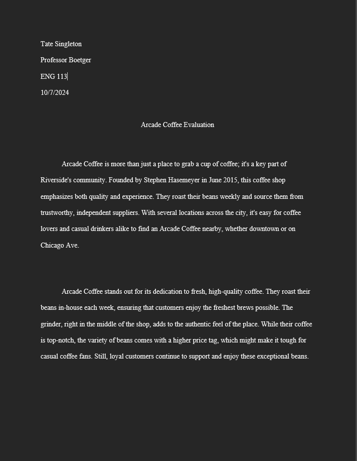
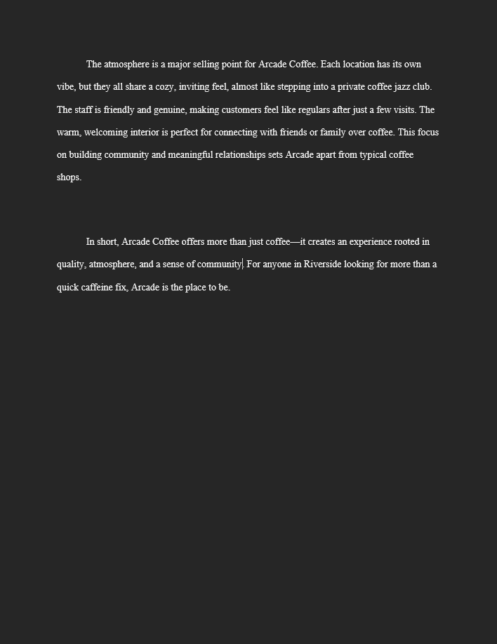
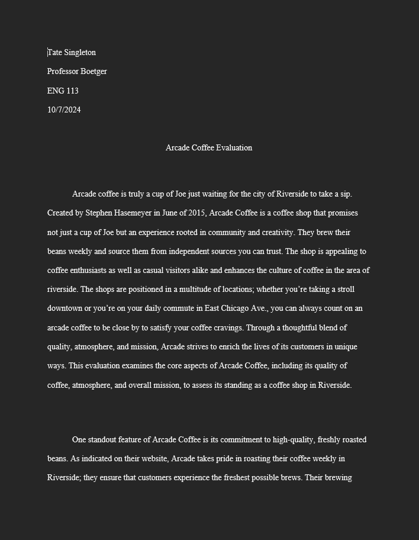
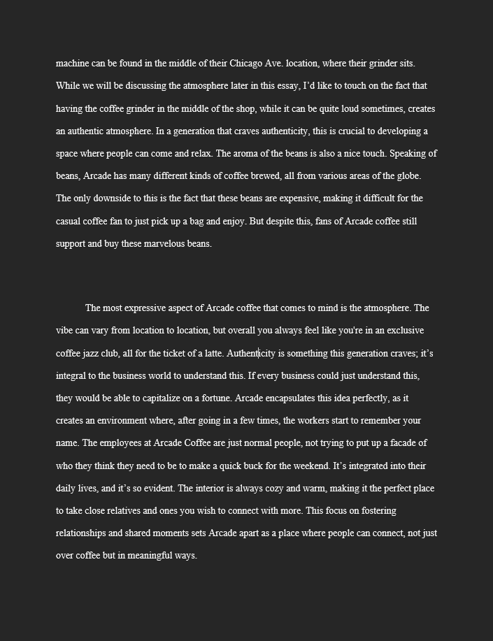
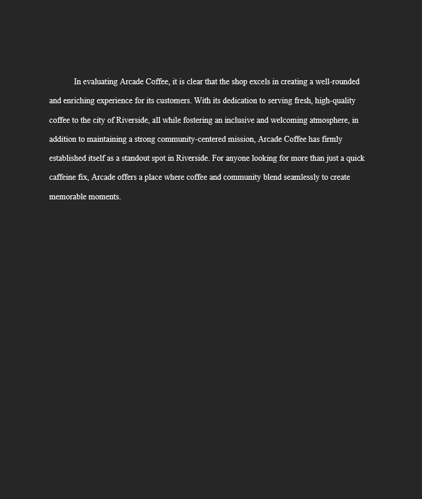

Draft


Submitted



About This Paper
This paper examines the unique atmosphere, community engagement, and quality of products at Arcade Coffee, comparing them to other local coffee shops. It explores how Arcade Coffee's design, service, and offerings create a memorable experience for customers.
What Changed?
Feedback from my teacher and peers encouraged me to focus more on specific details about the shop's ambiance and customer interactions. The final version includes clearer comparisons, a stronger thesis, and a more cohesive structure. This revision process underscores the importance of narrowing focus and enhancing descriptive analysis in writing.